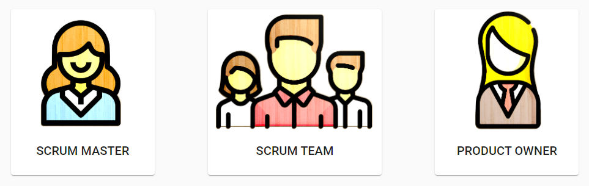

Le code source du projet est basé sur le dossier app lui-même décomposé en quatre différents modules :
On retrouve également le dossier assets qui contient les images, les polices d’écritures etc.
Le rôle du CoreModule est de déclarer les providers singletons de l’application.
Le CoreModule contient généralement les services de l’application. Ils sont susceptibles d’être utilisés partout dans l’application et doivent impérativement être des singletons (exister en un seul exemplaire).
Ainsi, le CoreModule ne doit être importé qu’une seule fois dans l’application, par le module AppModule.
En effet, puisque les providers d’un module sont globaux, il suffit d’importer CoreModule une fois pour rendre ses providers disponibles partout dans l’application et donc accessibles par tous les modules de l’application.
En résumé,
Dans ce module on va retrouver les services de l’application, ce sont eux qui feront notamment les appel http get/post… vers le backend.
Utile
ng g service core/leNomDeMonService
Angular va générer un service dans le dossier core de l’application et faire sa déclaration dans le CoreModule.
Ce module contient les diverses pages et les features qui seront visibles dans l’application.
Dans le cadre de notre projet, on a la feature de dashboard et celle de la page d’authentification qui se sont présents.
Utile
ng g component pages/leNomDeMaFeature
ng g component pages/leNomDeMaFeature/leNomdeMonSousComposant
Angular va générer un composant dans le dossier pages de l’application et faire sa déclaration dans le PagesModule.
Par convention, on modifiera la déclaration pour juste l’ajouter à un tableau de composants.
const COMPONENTS = [ ] ;
Une application Angular possède souvent un SharedModule qui contient les éléments réutilisables de l’application. Son rôle est de déclarer et exporter tous les composants, directives et pipes susceptibles d’être réutilisés partout dans le projet.
Le SharedModule contient généralement des éléments d’interface réutilisables (barre de navigation, HTML pour afficher un champ de formulaire ou un tableau…) ou des directives et pipes très génériques.
Tous les objets déclarés dans le SharedModule sont également exportés et donc prêts à être utilisés.
En résumé,
Dans ce module on va retrouver tous les composants, directives et pipes susceptibles d’être réutilisés.
Exemple

Ces trois objets ci-dessus sont les mêmes ainsi, on va définir un composant dans Shared qui sera paramétrable.
@Component({
selector: 'app-role-choice',
templateUrl: './role-choice.component.html',
styleUrls: ['./role-choice.component.css']
})
export class RoleChoiceComponent implements OnInit {
@Input() role: string;
@Input() imgPath: string;
constructor(private router : Router) { }
ngOnInit(): void {
}
validate() {
localStorage.setItem("role", this.role);
this.router.navigate(['']);
}
}
Ainsi, on a juste à appeler le composant dans une page de l’application en appelant son selecteur et en lui passant les arguments nécessaires.
Pour obtenir les trois objets comme montré sur l’exemple, on va juste appeler le composant dans notre page html, avec :
<div class="container">
<app-role-choice role="Scrum Master" imgPath="assets/img/scrumMaster.png"></app-role-choice>
<app-role-choice role="Scrum Team" imgPath="assets/img/scrumTeam.png"></app-role-choice>
<app-role-choice role="Product Owner" imgPath="assets/img/productOwner.png"></app-role-choice>
</div>
Utile
ng g component shared/components/leNomDeMonComposant
ng g pipe shared/pipes/leNomDeMonPipe
ng g directive shared/directives/leNomDeMaDirective
Angular va générer les objets dans le bon dossier de shared et faire leur déclaration dans le SharedModule.
On privilégiera cependant la déclaration de ces objets dans des tableaux d’objets comme le modèle suivant :
const COMPONENTS = [
RoleChoiceComponent
];
const PIPES = [];
const DIRECTIVES = [];
@NgModule({
declarations: [
...COMPONENTS, ...PIPES, ...DIRECTIVES
],
exports: [
...COMPONENTS, ...PIPES, ...DIRECTIVES
],
imports: [
CommonModule,
ThemeModule,
]
})
export class SharedModule { }
Dans ce module, on retrouve l’import de tous les composants de thème et des composants de layouts et de navigation comme le menu.
Dans le cadre de notre projet, on a le composant de menu ainsi que l’import des module d’Angular Material (comme MatButtonModule…).
Utile
Pour utiliser de nouveaux composants provenant d’Angular Material, il suffit d’ajouter le module désiré au tableau de modules suivant :
const MAT_MODULES = [
MatToolbarModule,
MatButtonModule,
];
Le ThemeModule est importé dans AppModule, PagesModule et SharedModule. Cela permet l’utilisation de tous les composants et modules exportés.
Le routing est défini dans le fichier app-routing.module. Pour ajouter un routage vers une URL spécifiques il suffit d’ajouter son routage et le composant auquel il est relié.
const routes: Routes = [
{
path: "authentication",
component: RoleAuthenticationComponent
},
{
path: "",
component: DashboardComponent
},
// {
// path: 'my-new-route',
// component: MyNewRouteComponent,
// }
];